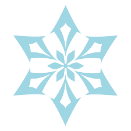

HISTORIA
Este juego comienza con dos viajeros gemelos que llegan a Teyvat, una tierra marcada por la guerra, de la cual buscan huir inmediatamente. Sin embargo, su escape es frustrado por una misteriosa deidad y es en este punto, cuando el jugador deberá elegir el género del personaje (Éter: masculino; Lumina: femenina) siendo el otro gemelo, aquel que será capturado por esta diosa sin nombre. Aquí inicia la travesía del jugador el cual como viajero, despierta años después para comenzar a explorar esta tierra en busca de su hermano perdido.
Tras despertar en la playa de Khaenri맏 el viajero conocerá a Paimon quien será su compañero de viaje, juntos irán rumbo a su primer destino: la ciudad Mondstadt, la cual es la más cercana de los siete reinos que comprende esta tierra. Sin embargo, a medida que se avanza el viajero se verá incluido en otros eventos de los cuales debe tomar parte; además en el camino aparecen otros personajes (jugables o no) que son cruciales en la trama.
La travesía se extenderá a la región Liyue, continuando con inazuma, luego yendo por la region de sumeru y actualmente estando en la region de fontaine, donde se desarrollan los sucesos de la actual entrega. Aún se espera la llegada de la ciudad Inazuma para continuar, pero sus desarrolladores ya han declarado que la historia podría tomar años antes de ser finalizada.
PERSONAJES
dentro de la trama de este juego entran en accion diferentes tipos de personajes, cada uno con su elemento correspondiente. Dentro de estos elementos se pueden encontrar:
pyro
algunos de estos personajes son:
hydro
algunos de estos personajes son:
anemo

algunos de estos personajes son:
electro
algunos de estos personajes son:
dendro

algunos de estos personajes son:
cryo
algunos de estos personajes son:
geo
algunos de estos personajes son:
dependiendo el personaje que elijas, su build va a ser diferente. ya que, no es lo mismo un personje DPS que un personaje SUPPORT o HEALER. entonces teniendo esto en cuenta deberiamos fijarnos que le viene mejor a cada personaje para sacarle su maximo provecho.


las builds de estos personajes estan sacadas de korosenai.es. visiten su pagina web para ver mas builds
COMBINACIONES DE EQUIPOS
gracias a que tenemos diferentes personajes, con builds diferentes de cada uno y diferentes elementos.
se pueden hacer varios equipos con diferentes particularidades, teniendo en cuenta que los elementos
sean compatibles entre si(asi se logran hacer reacciones elementales)
algunos de estos esquipos se los llama:
-PERMAFROST
-ELECTROCARGADOS
-DERRETIDOS
-VAPORIZADOS
-QUEMADURA
-HIPERFLORACION
-ENTRE OTRAS REACCIONES
EJEMPLOS DE EQUIPOS
PERMAFROST